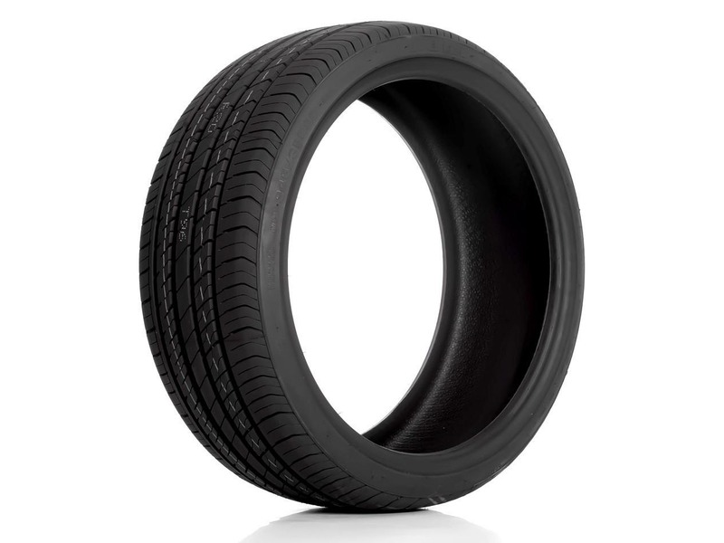

Pneu Yokohama BluEarth-ES ES32 205/55 R16 91V
- Medida
- 205/55 R16
- Categoria
- Passeio / Touring econômico
- Carga
- 91 (615 kg)
- Velocidade
- V (240 km/h)
Botão demonstrativo: não realiza compra nesta versão.
- Frete grátis para a região Sudeste em compras acima de R$ 500,00.
- Parcelamento em até 10x sem juros no cartão.
- Garantia de 5 anos contra defeito de fabricação.
Conheça o Yokohama BluEarth-ES ES32
O Yokohama BluEarth-ES ES32 é o pneu de passeio da linha BluEarth, criada pela Yokohama para reduzir o consumo de combustível sem perder aderência no seco e no molhado. É vendido no Brasil na medida 205/55 R16 91V, uma das mais comuns entre hatches e sedãs.
A banda assimétrica usa sulcos em formato de raio — os Lightning Groove — com bordas rígidas que aceleram a evacuação de água e mantêm a estabilidade em linha reta. Os ombros múltiplos combinam blocos profundos e lamelas para dar sustentação em curva e resistir ao desgaste irregular.
O perfil foi projetado para distribuir a pressão de contato de forma mais uniforme, o que prolonga a vida do pneu e evita o desgaste em degrau. É um pneu equilibrado, indicado para quem quer economia e conforto no uso diário.
Especificações do pneu
| Marca | Yokohama |
|---|---|
| Modelo | BluEarth-ES ES32 |
| Categoria | Passeio / Touring econômico |
| Medida | 205/55 R16 |
| Aro | 16 |
| Largura / Perfil | 205 mm / 55 |
| Índice de carga | 91 (615 kg por pneu) |
| Índice de velocidade | V (até 240 km/h) |
| Construção | Radial, sem câmara (tubeless) |
| Desenho da banda | Assimétrico |
| Uso | Verão / todas as estações no Brasil |
| Aplicação | Hatches e sedãs com aro 16 |
| Etiqueta europeia | Rolamento C · Molhado B · Ruído 68 dB |
| Código EAN | 4968814925505 |
| Garantia | 5 anos contra defeito de fabricação |
| Origem | Japão / Filipinas / Tailândia (varia conforme o lote) |
Índice de carga e velocidade devem ser iguais ou superiores aos especificados no manual do seu veículo. Confira a medida na etiqueta da coluna da porta.